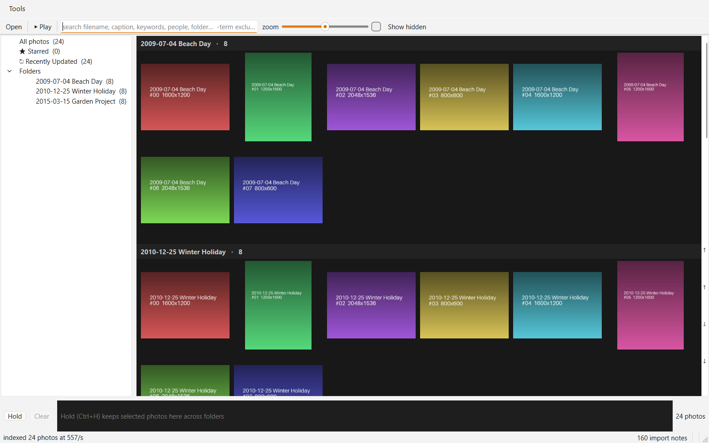

Fauxcasa read-only preview
tracer-test-v1 for Windows 10/11 x64 — a working, early view of a local photo manager in the spirit of Picasa.
Fauxcasa exists because useful personal software should survive the loss of a vendor, maintainer, or business model. This preview is real and useful, but it is not yet ready to replace Picasa for regular use.

Get the preview
Download the Windows preview- Right-click the downloaded zip and choose Extract All. Keep the extracted folder together.
- Open the
fauxcasa-tracer-guifolder and runfauxcasa-tracer-gui.exe. - Choose the top-level folder containing the photos you want to browse.
The build is unsigned. Windows SmartScreen may show “Windows protected your PC / unknown publisher.” Choose More info → Run anyway only if the zip came from the official release page and its SHA-256 matches the published checksum.
Essential controls
| Open a photo | Double-click it, or select it and press Enter. |
|---|---|
| Return to gallery | Press Esc to restore the gallery and folder tree. |
| Previous / next | Use ←/→ or J/K while viewing a photo. |
| Actual-size view | Press 1 or Ctrl+Alt+0; drag to pan. |
| Face boxes | Press F while viewing a photo that has imported face regions. |
| Slideshow | Choose Play in the gallery toolbar; Space pauses or resumes the slideshow. |
What works
- Scans photo folders in place without moving, copying, or modifying their contents.
- Fast folder, album, Starred, Recently Updated, and People views.
- Imports Picasa
.picasa.ini,.pal, contacts, and selected db3 recovery data. - Displays imported captions, stars, albums, faces, crops, hidden state, dates, GPS, and ratings.
- Searches filenames, captions, keywords, people, and folder names.
- Stills, RAW rendering, PSD fallback, video poster frames, viewer, zoom/pan, hover preview, and slideshow.
- Multi-root libraries and tolerance for temporarily offline volumes.
Storage and Picasa data
The preview does not write to photos, Picasa sidecars, or the Picasa database. It stores only its own rebuildable catalog, configuration, log, and thumbnail cache under the current user’s cache directory.
It reads existing Picasa sidecars for stars, captions, keywords, rotation, hidden flags, albums, and folder descriptions. It can also read Picasa album, contacts, and db3 sources from the normal Windows locations. Durable write support is future work.
Important limitations
- Read-only alpha: editing, tagging, exporting, and all other write operations are absent.
- Videos show poster frames but do not play yet.
- The initial directory walk happens before the window appears. A large or network-hosted library may take time to show the first window.
- Original-media decoding is not sandboxed yet. Use only files you trust.
- The app is Windows x64 only, unsigned, and supplied as an extracted folder rather than an installer.
- There is not yet a dedicated keywords/EXIF inspector panel. Selected metadata appears in search, the viewer, and the bottom status area.
Feedback and privacy
Report problems through GitHub Issues. Do not attach private photos, Picasa databases, names, captions, or identifying paths. Describe the behavior and redact personal data.
Build provenance
- Application commit:
b27a517c7e5db84108407005a2821f7bdf98990f - Windows and Linux tests, tracer smoke, and frozen bundle workflows passed.
- Exact Windows artifact passed the frozen dependency check, offscreen smoke, and native Windows rendering check.
- Test suite at release: 401 passed, 1 skipped.
Licensing
Application code is licensed under AGPL-3.0-or-later. Original project documentation is CC-BY-SA-4.0. The provisional Fauxcasa name and branding are reserved; the copyright licenses do not grant trademark rights.
This guide combines the project README’s product, storage, and licensing information with the tracer-test-v1 preview notes. The source-checkout Installation and Usage sections are intentionally omitted because they do not apply to the downloadable Windows preview.